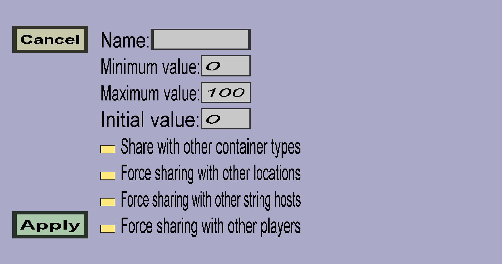

The energy type edit menu can be used to create a new energy type or to modify an existing energy type. Container recipes may require or generate energy of a certain energy type. This menu should look like this:
The name of the energy type is not used in-game: it only helps you distinguishing energy types from each other.
At any point in time, a custom container has a certain amount/value of the energy type. This value is always an integer and it will be between the Minimum value and the Maximum value that you specify here. The first time a custom container is opened, the value will be the Initial value that you specify here.
The 'sharing' checkboxes determine whether energy of this energy type will be shared between containers. By default, all checkboxes are unchecked, which will cause the energy to be shared between containers if and only if the containers share their inventory. (Containers of the same type can share their inventory if their storage mode allows it.)
This determines what happens when 2 different custom containers are at the same location. If you leave this unchecked, each container will have its own energy stash, so when one of the containers drains energy, the other will not notice it. If you check this, containers at the same location will share their energy. (So when a recipe of one container generates energy, a recipe of another container can consume it.)
If you leave this unchecked, containers at different locations will only share their energy if they share their inventory (when their storage mode is per player or global). If you check this checkbox, containers at different locations will share their energy, even when their storage mode is per location.
If you leave this unchecked, containers at different string hosts will only share their energy if they share their inventory (when their storage mode is per player or global). If you check this checkbox, containers at different string hosts will share their energy, even when their storage mode is per location.
If you leave this unchecked, players will share the energy of custom containers with other players if and only if they share the inventory of that custom container with other players (so when the storage mode is global or per location). If you check this, players will also share the energy of custom containers when they do not share their inventory (when the storage mode is per player or per location per player).